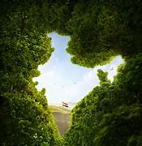

Indian Tourism
History of India
India
The Indian subcontinent, the great landmass of South Asia, is the home of one of the world’s oldest and most influential civilizations. In this article, the subcontinent, which for historical purposes is usually called simply “India,” is understood to comprise the areas of not only the present-day Republic of India (free from British rule since August 15, 1947, celebrated as the country’s Independence Day) but also the republics of Pakistan (partitioned from India in 1947) and Bangladesh (which formed the eastern part of Pakistan until its independence in 1971). For the histories of these latter two countries since their creation, see Pakistan and Bangladesh.
Since early times the Indian subcontinent appears to have provided an attractive habitat for human occupation. Toward the south it is effectively sheltered by wide expanses of ocean, which tended to isolate it culturally in ancient times, while to the north it is protected by the massive ranges of the Himalayas, which also sheltered it from the Arctic winds and the air currents of Central Asia. Only in the northwest and northeast is there easier access by land, and it was through those two sectors that most of the early contacts with the outside world took place.
Within the framework of hills and mountains represented by the Indo-Iranian borderlands on the west, the Indo-Myanmar borderlands in the east, and the Himalayas to the north, the subcontinent may in broadest terms be divided into two major divisions: in the north, the basins of the Indus and Ganges (Ganga) rivers (the Indo-Gangetic Plain) and, to the south, the block of Archean rocks that forms the Deccan plateau region. The expansive alluvial plain of the river basins provided the environment and focus for the rise of two great phases of city life: the civilization of the Indus valley, known as the Indus civilization, during the 3rd millennium bce; and, during the 1st millennium bce, that of the Ganges. To the south of this zone, and separating it from the peninsula proper, is a belt of hills and forests, running generally from west to east and to this day largely inhabited by tribal people. This belt has played mainly a negative role throughout Indian history in that it remained relatively thinly populated and did not form the focal point of any of the principal regional cultural developments of South Asia. However, it is traversed by various routes linking the more-attractive areas north and south of it. The Narmada (Narbada) River flows through this belt toward the west, mostly along the Vindhya Range, which has long been regarded as the symbolic boundary between northern and southern India.
The northern parts of India represent a series of contrasting regions, each with its own distinctive cultural history and its own distinctive population. In the northwest the valleys of the Baluchistan uplands (now largely in Balochistan, Pakistan) are a low-rainfall area, producing mainly wheat and barley and having a low density of population. Its residents, mainly tribal people, are in many respects closely akin to their Iranian neighbours. The adjacent Indus plains are also an area of extremely low rainfall, but the annual flooding of the river in ancient times and the exploitation of its waters by canal irrigation in the modern period have enhanced agricultural productivity, and the population is correspondingly denser than that of Baluchistan. The Indus valley may be divided into three parts: in the north are the plains of the five tributary rivers of the Punjab (Persian: Panjāb, “Five Waters”); in the center the consolidated waters of the Indus and its tributaries flow through the alluvial plains of Sind; and in the south the waters pass naturally into the Indus delta. East of the latter is the Great Indian, or Thar, Desert, which is in turn bounded on the east by a hill system known as the Aravali Range, the northernmost extent of the Deccan plateau region. Beyond them is the hilly region of Rajasthan and the Malwa Plateau. To the south is the Kathiawar Peninsula, forming both geographically and culturally an extension of Rajasthan. All of these regions have a relatively denser population than the preceding group, but for topographical reasons they have tended to be somewhat isolated, at least during historical times.
Why Visit India?
India is a country that offers an incredibly rich and diverse travel experience, making it a must-visit destination for anyone seeking adventure, culture, spirituality, and history all in one place. From the snow-capped Himalayas in the north to the serene beaches of Kerala in the south, India’s landscape is as varied as its culture. It is a land where ancient traditions and modern life coexist in a colorful, chaotic harmony. Visitors are often captivated by the majestic forts and palaces of Rajasthan, the spiritual aura of Varanasi, the architectural wonder of the Taj Mahal, and the backwaters of Kerala. The country's diverse religions, languages, cuisines, and festivals provide a unique insight into one of the world’s oldest civilizations. Whether you're exploring bustling cities like Delhi and Mumbai, experiencing the tranquility of Himalayan retreats, or taking part in vibrant festivals like Holi and Diwali, India leaves an unforgettable mark on your soul. Its warmth, hospitality, and sensory overload make every moment feel like a discovery, which is why so many travelers find themselves drawn back to India again and again.
1. Cultural Diversity and Heritage:India is often described as a "subcontinent" because of its immense cultural and geographical diversity. With 28 states and 8 union territories, each region in India has its own distinct language, traditions, food, festivals, clothing, and art forms. Whether it's the classical dance forms of Bharatnatyam and Kathak, the colorful festivals like Diwali, Holi, Eid, and Pongal, or the rich folk traditions, India offers a cultural experience that is both vast and deeply rooted in centuries-old traditions. The country is also home to several UNESCO World Heritage Sites, including ancient temples, forts, and caves that showcase its architectural and historical legacy.
2. Spiritual and Religious Significance:India is known as the birthplace of four major world religions—Hinduism, Buddhism, Jainism, and Sikhism. It is a spiritual hub for seekers and travelers from across the globe. Cities like Varanasi, Rishikesh, Bodh Gaya, and Amritsar offer powerful spiritual experiences. The country is dotted with thousands of temples, mosques, churches, gurudwaras, and monasteries that reflect its deep religious diversity and tolerance. Many travelers visit India not just to see monuments, but to embark on personal journeys of self-discovery, yoga, and meditation in ashrams and retreats.
3. Incredible Natural BeautyIndia is a land of stunning natural contrasts. In the north, the towering Himalayan mountains provide a paradise for trekkers, skiers, and adventure lovers. The valleys of Kashmir, Himachal Pradesh, and Uttarakhand are breathtakingly beautiful. In the west, the Thar Desert offers camel safaris and starry skies. The southern part of India is lush and tropical, with serene backwaters in Kerala, scenic hill stations like Munnar and Ooty, and exotic wildlife sanctuaries. India is also surrounded by coastline, from the beaches of Goa to the coral reefs of the Andaman Islands.
7. A Journey of DiscoveryFinally, visiting India is not just about ticking off tourist spots—it's about diving into a world of contrasts and surprises. One moment you might be meditating beside a quiet river, and the next you’re dancing in a colorful festival procession. India can be intense and chaotic, but also deeply inspiring and peaceful. It challenges your perspective, stimulates your senses, and leaves you with stories and memories that stay with you for life.
Visit India
India, officially the Republic of India, is a country located in South Asia. It is the seventh-largest country by area and the most populous country in the world as of June 2023.India shares borders with Pakistan and Afghanistan to the northwest, China, Nepal, and Bhutan to the north, and Myanmar and Bangladesh to the east. Sri Lanka is situated off the southern coast of India
Key Features
- Completed - 1947
- Formation - 1. Independence – August 15, 1947 2. Republic Formation – January 26, 1950 3. Integration of States (1947–1956 and beyond)
- Area rank - 7th
- Population (current) - 1.45 billion (145 crore)
- Population rank - 1st (Most populous country)
- Language Spoken - Assamese,Bengali,Bodo,Dogri,Gujarati,Hindi,Kannada,Kashmiri,Konkani,Maithili,Malayalam,Manipuri,Marathi,Nepali,Odia,Punjabi,Sanskrit,Santali,Sindhi,Tamil,Telugu,Urdu
- Time zone - IST (UTC+5:30)